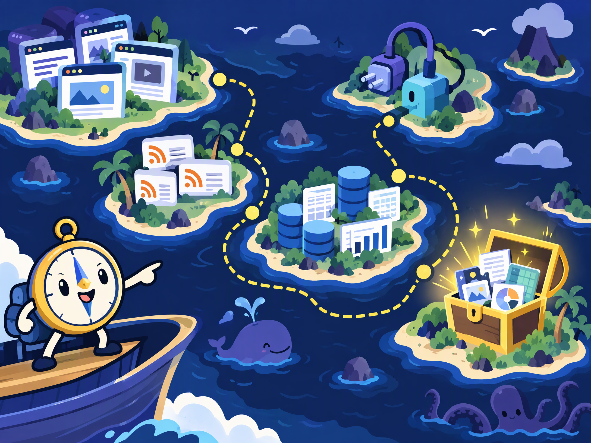

Reddit & forums
Stack Exchange, Hacker News, Lemmy, Discourse, and more.
Open official API ↗Open the category cards below. External provider buttons point to provider pages; local actions point to HTML.

Stack Exchange, Hacker News, Lemmy, Discourse, and more.
Open official API ↗Bluesky, Mastodon, official X, and Meta routes.
Open Bluesky API ↗YouTube metadata, Twitch, Vimeo, Dailymotion, and metadata services.
Open YouTube API ↗Open platforms, RSS feeds, search APIs, and archives.
Open GDELT ↗GitHub, GitLab, npm, Hugging Face, and local tools.
Open GitHub API ↗CourtListener, govinfo, CMS, USAJOBS, and public job feeds.
Open CourtListener ↗